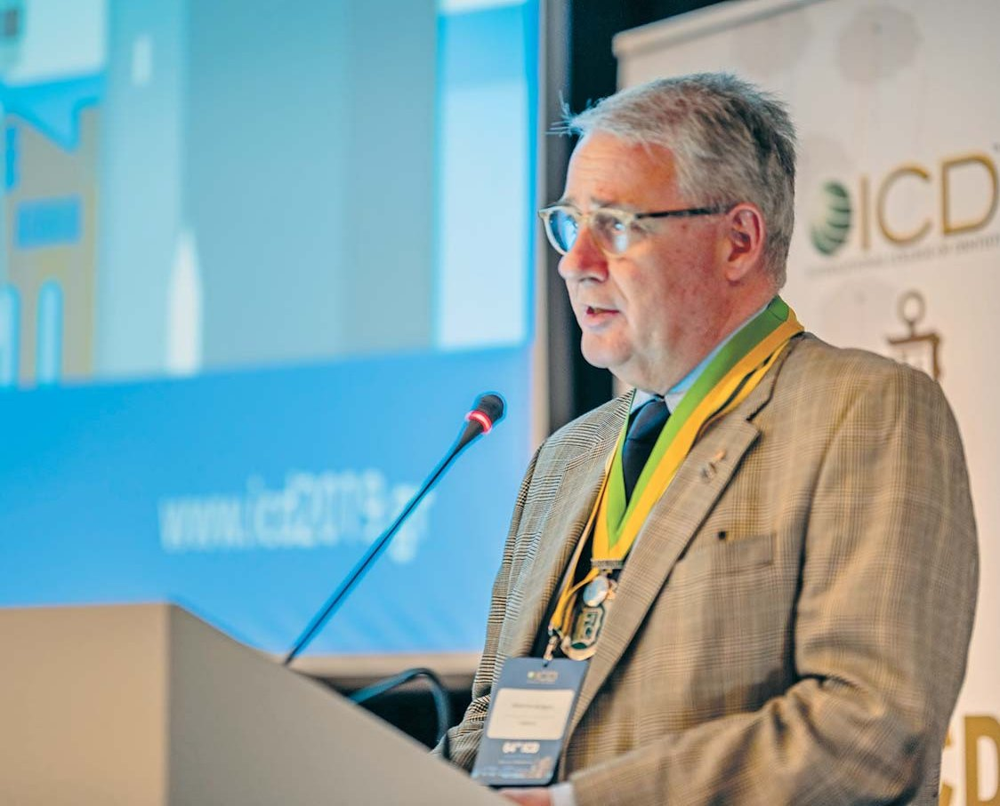
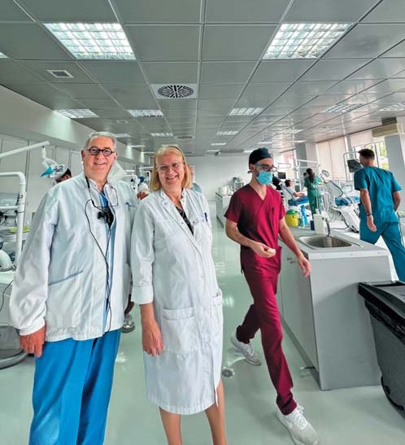
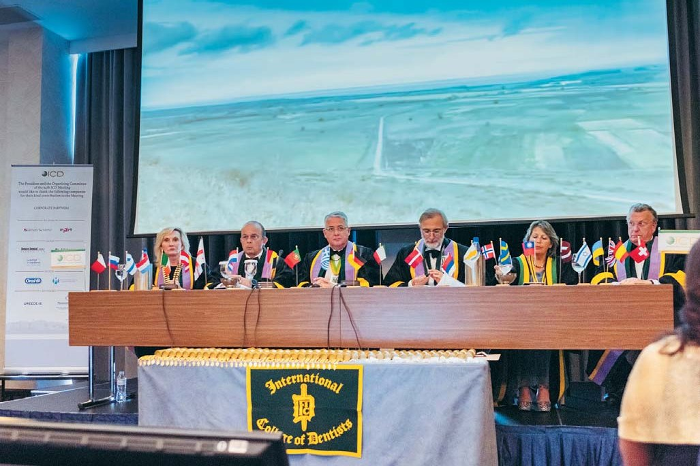
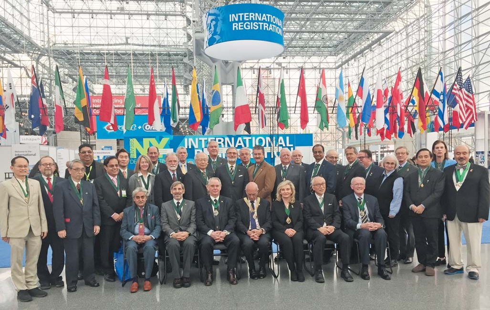
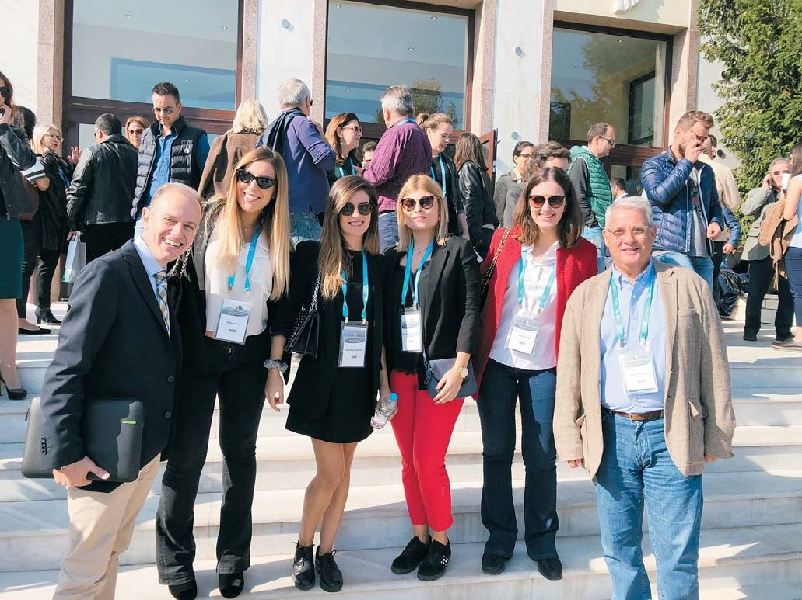
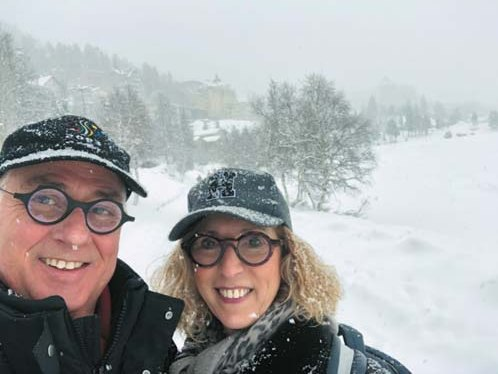
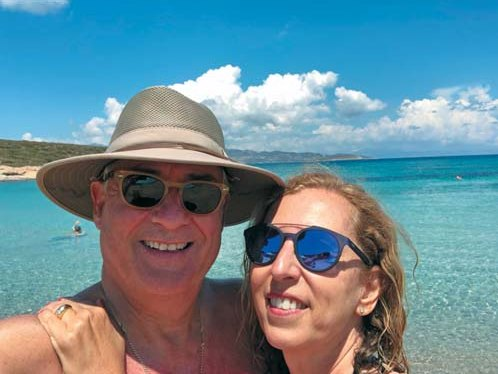

Вітальня · журнал «ДентАрт» 2024 №2
Президент Міжнародної колегії стоматологів Аргіріос Піссіотіс: «ICD має виконувати свою місію за будь-яких обставин!»

У Вітальню «ДентАрту» ми запросили Аргіріоса Піссіотіса, почесного професора стоматологічного факультету Університету Арістотеля в Салоніках (Греція). У цьому університеті він був завідувачем кафедри знімного протезування (2010–2017), директором післядипломної програми зі стоматології (2017–2023) і директором післядипломної програми «Наука і технологія в галузі протезування» (2020–2023). Цьогоріч пан Піссіотіс посідає почесну посаду Глобального президента Міжнародної колегії стоматологів. Наша розмова, як і було попередньо домовлено, присвячена місії Міжнародної колегії стоматологів...
Прагнув поширювати знання, які отримав у США, серед співвітчизників
– Шановний пане президенте, ефхарісто, дякуємо за можливість поспілкуватися! І передусім наше традиційне профорієнтаційне запитання: як Ви обрали професію стоматолога? Це був свідомий вибір чи збіг обставин?
– Шановний Сергію! Дозвольте спочатку подякувати Вам за честь дати інтерв'ю для журналу «ДентАрт». Я походжу з родини стоматологів: мій батько, мої дядько і тітка, четверо двоюрідних братів і сестер – професіонали у цій сфері. Але коли я навчався у середній школі, то спочатку хотів стати архітектором. Мене завжди захоплював креативний аспект в архітектурі. Однак за рік до вступних іспитів в університет я таки вирішив обрати стоматологію – через мій попередній досвід гри в дитинстві у стоматологічному кабінеті, де я змішував гіпс, альгінат і віск (це був непрямий тиск мого батька, щоб я став стоматологом), і працю підлітком за кишенькові гроші в ортодонтичному кабінеті мого дядька, де я обрізав гіпсові моделі та виготовляв ретейнери, – родичі думали, що з такою практикою мені буде легше зробити кар'єру стоматолога. Ось так, задовольняючи свої творчі потреби, я закінчив профорієнтацію навіть виготовленням мостів!
– Знімне протезування – дуже важлива частина стоматології, але воно зовсім не модне в нинішні часи, коли всі цікавляться імплантами. Як професійний шлях привів Вас до знімного протезування?
– Коли я розпочинав навчання в аспірантурі у Школі стоматологічної медицини Університету Тафтса в Бостоні, США, я мав нагоду навчатися у чудових клініцистів: доктора Джино Пасамонті і доктора Філа Вільямса, фахівців зі знімного протезування, а незнімному протезуванню мене вчили доктори Ллойд Міллер, Моріс Мартель і Мішель Гайяр. Отже, мене навчали як знімному, так і незнімному протезуванню. Коли я повернувся в Грецію у 1984 році, то подумав, що маю поширювати знання, які отримав у США, серед співвітчизників, студентів Стоматологічної школи Університету Арістотеля, де мені запропонували посаду на кафедрі знімного протезування.
Коли почали впроваджувати імплантологію, мені сказали, що моє відділення закриється, тому що з імплантами нікому більше не буде інтересу до повних зубних протезів. Важко уявити собі більш наївну думку. Усі ортопедичні теорії заміщення втрачених природних зубів ґрунтуються на теоріях, розроблених для повних зубних протезів, і ними керуються також як у незнімному протезуванні, так і в імплантології. Можливо, настане пора, коли потреби в забезпеченні беззубих пацієнтів зубними протезами не буде, але це не станеться найближчим часом, і незалежно від того, якою буде ортопедична терапевтична модальність, основні принципи, які використовуватимуться для досягнення успішної реабілітації, будуть засновані на принципах, розроблених для повного протезування.
У європейських стоматологічних школах сьогодні пропонують дуже компетентну стоматологічну освіту
– Колись усі дороги вели до Риму, тому що саме римляни проклали їх зі своєї столиці в усі кінці світу… Так само мені здається, що і всі стоматологічні дороги ведуть до США, тому значну частину Вашого професійного шляху займали стажування та наукова діяльність в Університеті Тафтса. Чи справді, на Вашу думку, Сполучені Штати є світовим центром стоматології?
– Стоматологічні школи Сполучених Штатів були піонерами у структурованій розробці післядипломних програм. Це зробило американську стоматологічну освіту набагато ефективнішою. Крім того, США змогли краще регулювати програми бакалаврату та аспірантури, надаючи акредитацію Американської стоматологічної асоціації (ADA). Хоча в таких стоматологічних дисциплінах, як оральна хірургія, європейці були більш просунутими, особливо в Центральній Європі, розвиток післядипломної освіти з усіх стоматологічних дисциплін у європейських стоматологічних школах відбувся набагато пізніше і у своїй структурі наслідував приклад стоматологічних шкіл США. Сьогодні я вважаю, що цей розрив усунуто, і в європейських стоматологічних школах є багато талантів, які пропонують дуже компетентну студентську та післядипломну стоматологічну освіту.

– Цього року як Глобальний президент Ви очолюєте Міжнародну колегію стоматологів, всесвітню громадську професійну організацію зі столітньою історією. ICD проголошує своєю місією визнання заслуг стоматологів перед професією, запрошуючи видатних стоматологів в усьому світі приєднатися до Колегії. Чи змінилася ця місія за минуле століття історії ICD?
– Згідно з концепцією ICD, засновники завжди зосереджували свою місію на визнанні стоматологів за їхнє служіння суспільству в усьому світі та наданні їм можливості продовжувати роботу, спілкуючись і обмінюючись знаннями й досвідом між собою для сприяння стоматологічному здоров'ю населення.

Однак світ змінився, і ICD має адаптуватися до цих змін. Членство в Колегії, як і раніше, присвячується визнанню заслуг стоматологів у служінні суспільству, але сьогодні воно дає їм можливість служити, сприяючи потребам соціальної відповідальності в наданні послуг із забезпечення здоров'я ротової порожнини незаможним спільнотам у всьому світі. Колегія також забезпечує освіту для провайдерів медичних послуг у цих громадах, щоб визначеним і стійким шляхом покращити профілактику стоматологічних захворювань у популяції.
– Однією з основних функцій Міжнародної колегії стоматологів є гуманітарні проєкти. Багато з них присвячено навчанню дітей основам гігієни ротової порожнини, і це правильно, адже це гуманітарні проєкти, спрямовані у майбутнє... А як щодо гуманітарних проєктів зі знімним протезуванням, вони існують?
– Цілком зрозуміло, що більшість проєктів, підтримуваних ICD, зосереджені на профілактичних заходах, спрямованих на молоде населення, і ці проєкти запобігатимуть потребі в знімному протезуванні, зменшуючи поширеність стоматологічних захворювань. Однак є також проєкти, зосереджені на групах літнього віку, головним чином для пацієнтів, які перебувають у стаціонарі і потребують протезування. Існують, однак, деякі перешкоди, зважаючи на значну вартість знімного протезування і менший ентузіазм з боку одержувачів цієї допомоги.
Визнати молодих зірок стоматології та запросити їх до ICD
– Як Глобальному президентові, цього року Вам потрібно відвідувати щорічні зустрічі всіх 20-ти секцій по всьому світу... Світ глобальний і водночас різний! Наскільки однакова і наскільки різна, на Вашу думку, діяльність різних секцій Міжнародної колегії стоматологів?
– Спочатку я мушу визнати, що відвідати всі секції за один рік Глобальному президентові майже неможливо. Багато секцій мають одноденні зустрічі на кілька годин у другій половині дня, що робить дуже неефективною подорож заради такої короткої зустрічі. Але ми знаємо і такі скликання, як щорічне зібрання Європейської секції (Секція V), яка є триденною зустріччю, і це дає можливість учасникам зустрітися як із вступниками, так і з керівництвом Секції.
Така секція, як Секція США (Секція I), проводить щорічні збори, на яких приймають 300 нових членів, а деякі інші секції мають скликання, на яких приймають 12 чи 15 нових членів протягом двогодинної події...
Зрозуміло, що між секціями існують також культурні відмінності, особливо коли йдеться про багатонаціональні секції. Однак, незважаючи на ці відмінності, усі секції однаково поділяють основні цінності ICD, оскільки Колегія в усьому світі є єдиною організацією!

– Наскільки я чую на засіданнях Регентської ради Європейської секції, постійно порушується питання про омолодження складу Колегії, про те, що потрібно запрошувати більше молодих стоматологів до своїх лав. Щоб бути запрошеним до Колегії, треба мати вагомі заслуги перед професією, але молоді стоматологи просто можуть не встигнути мати значні досягнення… За якими критеріями молодих стоматологів можна запрошувати до Міжнародної колегії стоматологів?
– Це правда, і це глобальна проблема. Середній вік членів ICD становить від 50 до 70 років. Я вважаю, що молоді стоматологи можуть продемонструвати свою професійність досить рано, у віці за 30 років, але люди, призначені визнавати їх (інші члени та лідери), набагато старші, і їм не так легко знати про молодих колег та їхні досягнення. Має відбуватися поступове зростання кількості молодших членів Колегії, і тут люди з академічних кіл можуть допомогти, оскільки вони в змозі визначити зірок у стоматології, що сходять, та рекомендувати їх для членства в ICD. Недавно прийняті в організацію також можуть рекомендувати стоматологів, яких вони знають (ближче до свого віку), котрі заслуговують на визнання. Таким чином ми можемо знизити середній вік членства і реально зблизитися з молодим поколінням стоматологів. Однак дуже важливо мотивувати цих молодих людей розуміти значення Колегії та цінувати те, що вони можуть зробити для неї, а не тільки те, що Колегія може зробити для них.
– Наскільки професія стоматолога стала традиційною для Вашої родини? Які професії обрали Ваші діти?
– Хоча я з родини стоматологів, мої діти не пішли моїм шляхом. Коли вони були школярами, то обоє казали, що хочуть стати стоматологами, але коли настала пора вирішувати, пішли своїм шляхом. Моя донька Еліна обрала англійську літературу і почала кар'єру у видавничій справі, а мій син Леонідас вивчав психологію та кадри, проте нині працює ІТ-фахівцем. Хтось може сказати, що я був занадто ліберальним, коли дозволив їм обрати те, що їм найбільше подобається. Час покаже, чи мав я рацію. Поки що наші діти задоволені своїм вибором!

Шкода, що світом прагнуть правити божевілля та егоманія… Але не втрачаймо надії!
– Зараз світ ніби потроху сходить з розуму, і повідомлення про війну чи теракти вже не є такими несподіваними, людство ніби звикло до скрутних часів... Як і чим Міжнародна колегія стоматологів реагує на зростання напруги у світі?
– На жаль, світ завжди стурбований меншими чи більшими, навіть глобальними заворушеннями, і ICD має боротися, щоб вижити та виконувати свою місію за будь-яких обставин. Дуже шкода, що політиці та фінансовим або владним інтересам вдається створити несприятливі обставини, які завдають шкоди здоров'ю людей і помножують потреби у стоматологічній допомозі в усьому світі. І такі організації, як наша Колегія, мають прийти постраждалим на допомогу, забезпечуючи їм основні потреби щодо догляду за ротовою порожниною. Ми всі сподіваємося на кращий світ, де будуть рости наші діти, але це не повністю в наших руках. Однак ми повинні мати надію, і ця надія ніколи не повинна вмерти!
– Дякую за цікаві та змістовні відповіді на мої запитання, шановний Аргіріосе! І на завершення – Ваші побажання читачам журналу «ДентАрт» в Україні та за кордоном…
– Мій дорогий Сергію, для мене велика честь бути обраним для публікації в журналі «ДентАрт»! Я хочу побажати читачам передусім, щоб якнайшвидше закінчилася війна, яка зруйнувала життя багатьох українців, розлучила сім'ї, багато хто втратив близьких. Я захоплююся мужністю українців стати на захист своєї країни проти могутнішого ворога. Шкода, що нашим світом прагнуть правити божевілля та егоманія. Також я захоплююся українськими стоматологами за те, що вони продовжують прагнути ставати кращими на благо свого суспільства, незважаючи на несприятливі обставини. Мені було приємно відповідати на запитання для цього інтерв'ю.
– Дякуємо за моральну підтримку, таку важливу для нас сьогодні! Разом воїни світла переможуть пітьму!


Кохання дарує тепло о будь-якій порі року…